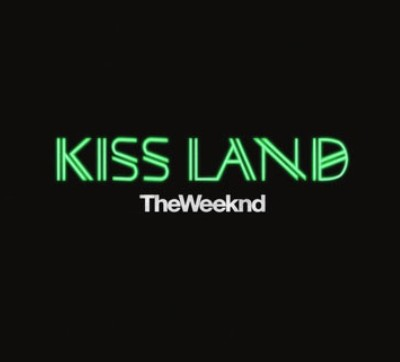
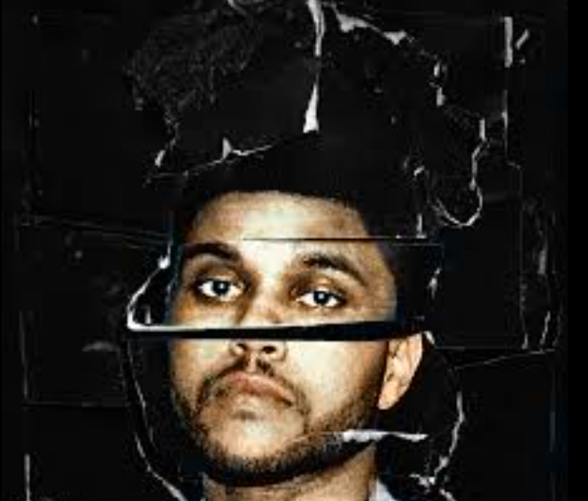
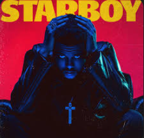
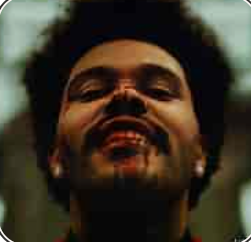
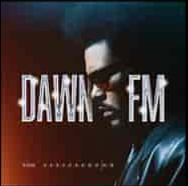

Kiss Land (2013)
Debut oficial de The Weeknd, con un sonido oscuro y atmosférico que consolidó su estilo único.
Explora la colección completa de álbumes que han dado forma al R&B moderno

Debut oficial de The Weeknd, con un sonido oscuro y atmosférico que consolidó su estilo único.

Incluye éxitos como "Can't Feel My Face" y "The Hills", que lo llevaron al estrellato mundial.

Ganador del Grammy a Mejor Álbum Urbano Contemporáneo, con colaboraciones de Daft Punk.

Un álbum conceptual con estética retro, que incluye el megaéxito "Blinding Lights".

Inspirado en una emisora ficticia, mezcla synth-pop y electrónica con un concepto futurista.